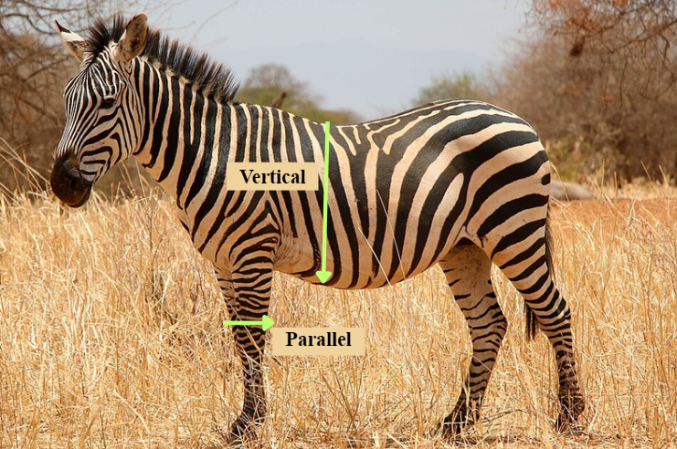
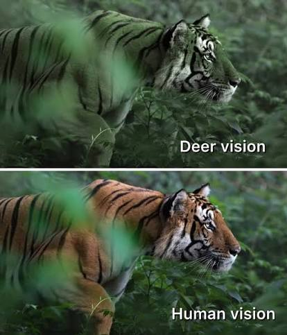
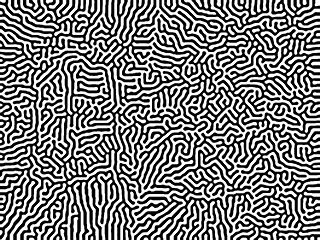
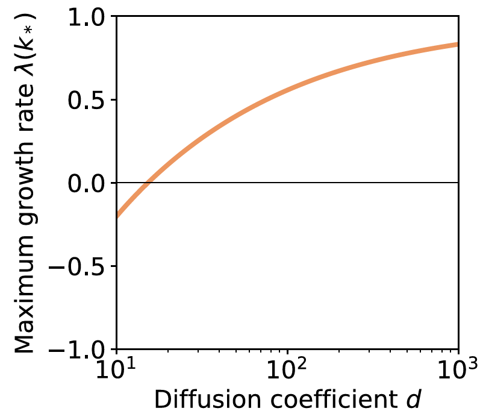
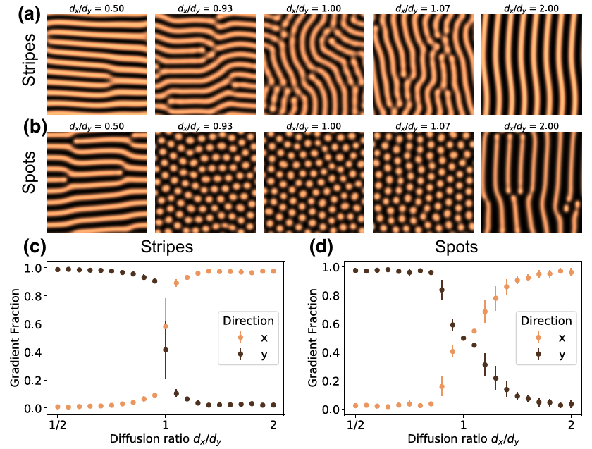
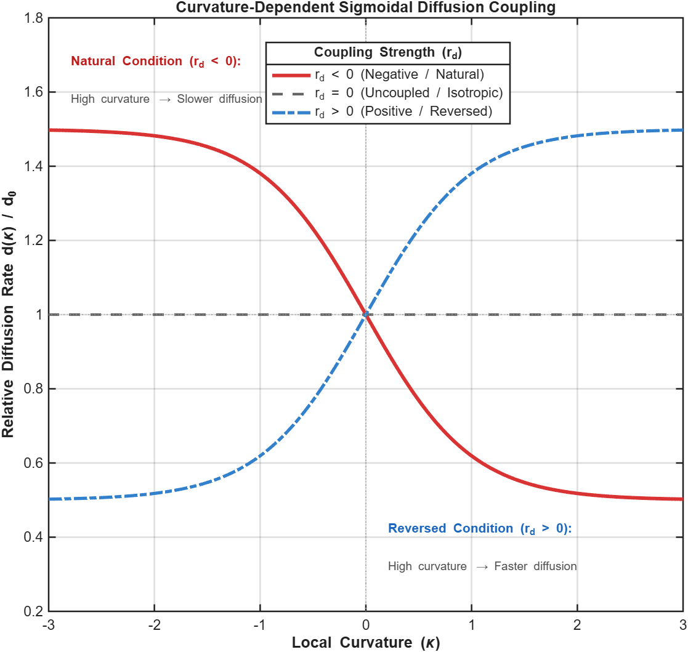
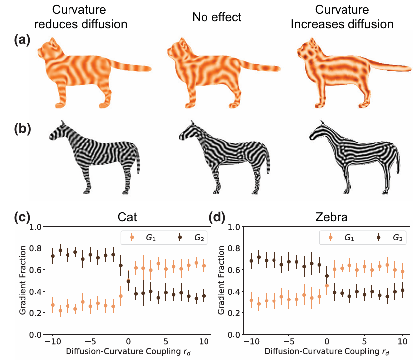
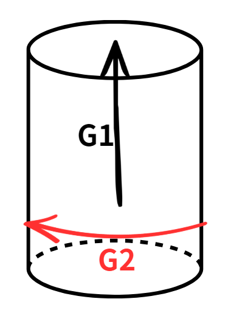

既然條紋的方向對生存如此重要，生物體究竟是如何演化出這些條紋的？早在 1952 年，數學家圖靈提出著名的「反應-擴散模型」，證明兩種化學物質在皮膚下相互作用，就能自發形成斑紋。
但這個經典理論有一個嚴重的物理局限：標準圖靈模型是「各向同性（Isotropy）」的。 代表化學物質在平坦的皮膚上，往上下左右擴散的速度完全一樣。無法決定「哪邊是上、下」，最後凝結出來的條紋只會像指紋或迷宮一樣隨機彎曲，根本無法像斑馬一樣排成整齊的方向。
— 基礎物理實驗學 3B 期初作業 —
觀察自然界中的斑紋，會發現一個有趣的幾何規律：斑馬軀幹上的條紋是垂直的，但到了四肢卻自動轉 $90^\circ$ 變成水平的；而老虎腹部的條紋，則幾乎全數垂直於地面。
這種高度一致的方向性，是演化出來的精密偽裝。在鹿類等主要獵物（缺乏紅綠辨色能力）的視覺中，老虎橘黑相間的毛色會融入背景，而垂直的條紋能匹配高大草叢的生長方向，達到視覺上的隱身。


既然條紋的方向對生存如此重要，生物體究竟是如何演化出這些條紋的？早在 1952 年，數學家圖靈提出著名的「反應-擴散模型」，證明兩種化學物質在皮膚下相互作用，就能自發形成斑紋。
但這個經典理論有一個嚴重的物理局限：標準圖靈模型是「各向同性（Isotropy）」的。 代表化學物質在平坦的皮膚上，往上下左右擴散的速度完全一樣。無法決定「哪邊是上、下」，最後凝結出來的條紋只會像指紋或迷宮一樣隨機彎曲，根本無法像斑馬一樣排成整齊的方向。

過去有科學家認為是肢體邊界限制條紋方向，但這無法解釋為什麼寬闊平坦的斑馬軀幹也能長出整齊的直紋。這篇研究提出一個更簡潔的觀點：打破「各向同性」的關鍵，不是複雜的基因，而是身體本身的幾何曲率。
論文證實：只要讓化學物質的擴散速度與身體表面的「彎曲程度（曲率）」產生耦合，身體幾何自然就會提供方向引導，讓圖案自動排列。
— 從局部不穩定性，到二維條紋的定向排列 —
1952 年圖靈提出的「反應-擴散模型」，說明空間圖樣如何自發性地從均勻狀態中誕生。系統由兩種化學物質組成：促進色素生成的活化劑（$u$）與抑制色素生成的抑制劑（$v$）。
當系統滿足 $D_v \gg D_u$（即抑制劑擴散能力遠大於活化劑）時，會引發「局部活化、長程抑制」效應。此時，原本空間充份均勻的平滑狀態對微小擾動失去穩定性，系統自發打破對稱性，此現象即為圖靈不穩定性（Turing Instability）。
作者使用 Schnakenberg 偏微分方程進行定量分析。方程描述兩物質濃度的時間變化，由「局部化學反應」與「空間擴散」兩項組成：
從方程式到特徵尺度：
透過對均勻穩態進行線性穩定性分析，可解出擾動隨時間變化的生長速率（圖 2.1）。分析顯示，系統存在一個對應最大生長速率的特徵波數（Wave number, $k$）。
換句話說，圖靈不穩定性產生的斑紋並非大小隨機，而是由擴散係數比值（$D_v/D_u$）決定條紋的重複週期與整體特徵尺度（即一組黑白條紋的總寬度）。

線性穩定性分析雖然解決圖案「特徵寬度」的決定機制，但傳統模型假設擴散在各方向均勻進行「各向同性」(Isotropic Diffusion）。在缺乏方向偏好下，系統僅能生成無序的迷宮紋或隨機斑點。
為探討條紋定向排列的機制，作者在二維平面模擬中（圖 2.2），引入了擴散異向性—人為調降抑制劑沿垂直軸（$y$ 軸）的擴散速率：
結果顯示，方向性的擴散速率差打破旋轉對稱性，引發系統相變：原本無序的圖樣被拉長，並自動沿擴散速率較慢的方向（$y$ 軸）進行定向對齊，形成整齊的平行條紋。

2D 模擬證明方向性擴散能引導條紋對齊。但真實三維生物體並無外加的 $x, y$ 座標軸，生物體如何自發產生這種方向偏好，是下一步探討三維幾何曲率的核心關鍵。
— 身體的幾何形狀，就是引導條紋方向的隱形軌道 —
在上一頁我們證明「方向速度差」能拉出條紋，但真實動物身體上並沒有 $x, y$ 座標軸。論文最核心的突破，就是提出「曲率依賴型擴散假說」：身體表面的彎曲程度（主曲率 $\kappa$），就是引導化學物質擴散方向的路線。
作者利用 Sigmoid（S型）函數建構擴散速率 $d(\kappa)$ 與局部曲率 $\kappa$ 的平滑連動關係：
其中 $r_d$ 為連動強度（Coupling coefficient），它是決定斑紋走向的最關鍵開關：



如上圖所示，當 $r_d < 0$ 時，系統重現真實動物的毛色：斑馬軀幹呈垂直直紋、四肢呈現水平橫紋。而下方 (c) 與 (d) 的定量分析則證實，只要調整 $r_d$，系統的方向主導梯度（Gradient Fraction）就會發生顯著相變。
— 從偏微分方程到大自然的造物法則 —
傳統圖靈模型只能生成方向無序的迷宮紋。本研究證明，只要化學物質在不同方向上的擴散速度存在微小差異（異向性），系統就能打破各向同性，引導條紋整齊排列。
論文證實「曲率依賴型擴散假說」。在自然的「負耦合」機制下，身體表面的彎曲程度會自發調節擴散速率，解釋為何斑馬軀幹呈現垂直直紋，而四肢與尾巴則形成環向橫紋。
研究最深遠的啟發是大自然無須在基因中定義每一條斑紋的位置。生物體只需透過基礎的反應擴散機制，搭配發育過程中的身體幾何形狀，物理規律便會自發性地生成斑紋。
— 用物理學解釋動物條紋的生長方向 —
教授這次提供許多論文，因為我對動物很感興趣，所以挑選這篇。讀完之後，這篇論文解答我過去一直很好奇的問題：動物條紋的生長方向究竟是如何決定的。
以前在畫有條紋的動物時，我沒有特別搜尋圖片參考，大多憑自己的想像去畫。當時我一直搞不懂動物身上的條紋走向是否有明確規律，例如為什麼有些部位長直紋、有些部位卻長橫紋。
「這篇論文明確指出：動物條紋的生長走向，主要是由身體表面的幾何曲率所引導與決定的。」
這解答我過去畫圖時對條紋走向的困惑。原來看似隨意的自然斑紋，背後是由身體幾何形狀與物理擴散機制共同決定的結果。